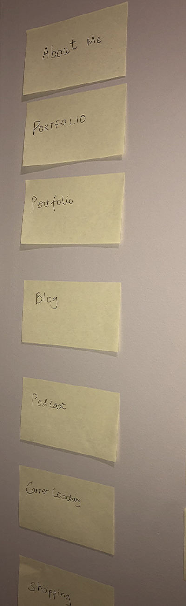
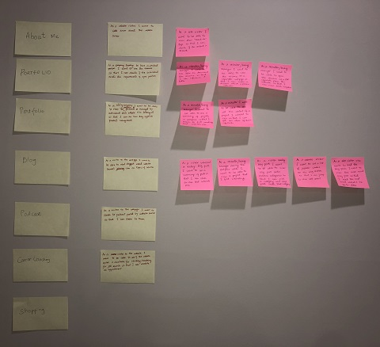
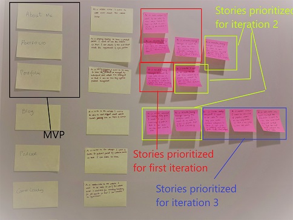

How I Used Agile Product Planning To Start Building My Portfolio Website
My goal for this post is to share what is agile in simple terms. I want to share my understanding of it and show how I have these methods in creating my personal portfolio.
Continuous Improvement Is Better Than Delayed Perfection. ~ Mark Twain
What is Agile and what its not
Agile in a nutshell is a "mindset" and "philosophy" of delivering value to the end user. It places customers needs and continuous improvement above everything else. What it should not be, is a fast assembly line of creating new features and being first to market.
Agile planning
Here I show how I have used various agile tools to start planning for my personal portfolio website. The steps I took to get started-
- What is my product- Lot of market research, user survey etc is done to come up with this in a work environment.
- Why- AKA the Vision is very important to have. Creating features and breaking them down to user stories, vision is what will keep them streamlined. These days software developers can build anything and everything under the sky. But vision is what will keep us focused on why are we building what we are building and not create a Frankenstein along the way.
- Who- User Personas- Agile places a lot of importance on customer voice. Hence it is paramount to know who the customers are, their day to day, demographics, and what their goals are. These considerations will drive features that we will deliver.
- Features- Once I have the what, the why and the who I can start detailing the features. All features combined together should represent the broader vision defined in step 2. Once we have a list of features we will rank them based on what feature will give most value to least value. The collections of features or feature groups will form our product backlog
- Epics/User Stories- I will go over each feature, start breaking them into high level user stories or epics. A user story is how a customer would interact with my product. The most widely used format is-
“As a "user" I want to be able to ----- so that I can----” Once I have the high level user story, I will keep breaking it down further. This happens until the user story meets INVEST criteria. INVEST stands for Independent, Valuable, Estimable Small, Testable. - Minimum Viable Product- This is by far the most important concept of agile practice. MVP defines which features/stories are valuable, over the rest that are in the backlog. Without a priority list we would be working on all items in our backlog that may or may not be valuable. Hence by having the MVP features and stories, we can now work towards refining only valuable ones. After refinement I will develop and test them. Our intention is to deliver it to customers and gather their feedback on that small chunk. This feedback guides the course towards creating a product that customer needs and wants.
- Acceptance criteria- A user story accompanies an acceptance criteria. It ensures the functionality meets certain conditions for us to consider it done. We write these preferably before development starts. After development, we verify the functionality meets user needs based on the criteria. If the functionality works, has no bugs but doesn’t meet user needs then it isn’t considered done.
How I followed the above steps to create the MVP for my website
- What is my Product Goal- A way to share my professional endeavors, achievements on the web. I also want to connect with people with similar interests.
- Why- My Vision- I extended the product goal outwards to create a vision. This way I am creating a product that isn’t just limited by what I want today but can also scale up for future expansion. My vision is to create a Content Website which will have below features to begin-
- My Portfolio- This is my immediate goal. It will include all Product Management projects and resume. This I have deemed as the most important feature as that is an immediate need and also aligns to my goal.
- Blog Posts- This is my near term goal based on the fact that I know further down the course we have to do blog posts. I tried to research other personal portfolio websites online. Most of them have blog posts that drive traffic to their website. It is one of the important features because it is required for my course and provides value to site visitors.
- Podcasts- The vision is to share content in different forms relevant to product management. Podcasts are the fastest medium to share information and fits the long term vision. This sits in the backlog and will have a few user stories but isn't prioritized. If users like the previously released features I will prioritize the Podcast feature next and refine stories for it. If not, I need to add more value to existing features before moving to the next feature.
- Who- Personas
- Recruiters/Hiring Managers
- Peers and leaders in Product Management
- People looking to get into product management
- Features- I started by breaking down the goal into features 
- Epics/User Stories 
- Minimum Viable Product- Below is what my board is categorized and prioritized 
- Acceptance Criteria- I will add acceptance criteria for the prioritized stories. This will provide me with conditions that I need to test my user stories with, once developed. The stories that work functionally and meet the criteria are accepted for product launch.
This concludes my preliminary work before diving straight into designing of my product. Next steps is to come up with wireframes for user stories in my MVP. During the design phase I will make sure I design for MVP but keep my eye on the vision as well. Since this is a personal project and I am working on this individually, it is a gross simplification of the entire process. In a regular team environment and depending on the product and maturity of the team this can be complex. In summary what I have learnt on my short agile jourey is, embracing agile means embracing imperfection. It means knowing the first solution will not be perfect but it sure will be valuable. This is true for all size of products and teams.

Shradha Doshi
Shradha Doshi is a product owner, an entrepreneur a mom of 2 girls and an aspiring web developer. She firmly believes in user centric, empathy based design and how products and websites built with these principles help bring communities together. She loves working in product management and development since it allows her to practice her passion in design, finding solutions that work for masses and where she gets to change lens between big picture and minute details. Her future goals include empowering stay at home parents especially mothers trying to get back into the workforce based on her own journey and share the lessons she’s learned along the way. When she isnt working, she loves cooking, spending time with her husband and 2 kids and doing arts and crafts with them.Learn Digital Skills
Find out when the next cohort begins!
The most comprehensive program to up your game in the remote career world.
Learn More